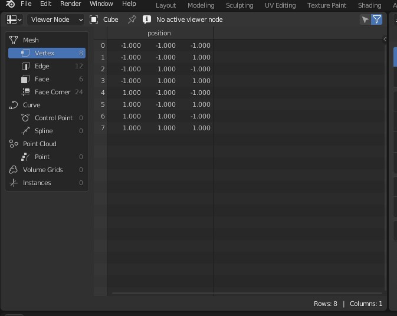

Introducción
Entorno de trabajo
Geometry nodes system for modifying the geometry of an object with node-based operations. It can be accessed by adding a Geometry Nodes Modifier.
Manual de blender

Seguramente ya has visto el potencial de los geometry nodes y has intentado usarlos por tu cuenta para distribuir puntos en planos u otras cosas. La ventaja de este nuevo metodo para manejar la geometria es la proceduralidad que ofrece.
Si en algún momento has sentido miedo de la complejidad a la que pueden llegar estos arboles,
no te preocupes. La mentalidad que se debe seguir en estas situaciones es siempre la misma:
* Divide y vencerás
Viewport
Layout
Para empezar podemos dividir el workspace en partes muy concretas a las que blender ya nos ha acostumbrado.
Spreadsheet

A este nodo le entran:
- 8 vertices
- 12 segmentos
- 6 caras
- 24 esquinas de caras (este concepto lo aprenderemos mas adelante)
- No tiene curvas ni instancias entre otros

Jerarquia y modificadores


- Entrada: Permite que le demos datos variables desde fuera del editor de geometry nodes. En pocas palabras, si quieres tener el mismo arbol de Geometry Nodes en diferentes objetos, pero quieres que el numero de particulas sea menor en el más lejano, lo conviertes en una variable externa o global (es lo mismo).
- Salida: Contiene la información que se mostrará por pantalla y que se pasará a los siguientes Geometry Nodes.
Algunas dudas
Cuando empecé a utilizarlos me surgieron muchas dudas como:- Y si quiero pasar información entre diferentes Geometry Nodes sin que aparezcan por pantalla? Para eso empleamos los atributos (más adelante)
- Como reutilizo el mismo nodo en dos objetos diferentes? La mejor forma es renombrando el nodo. Ten en cuenta que tienen un nombre global y otro local
- ...